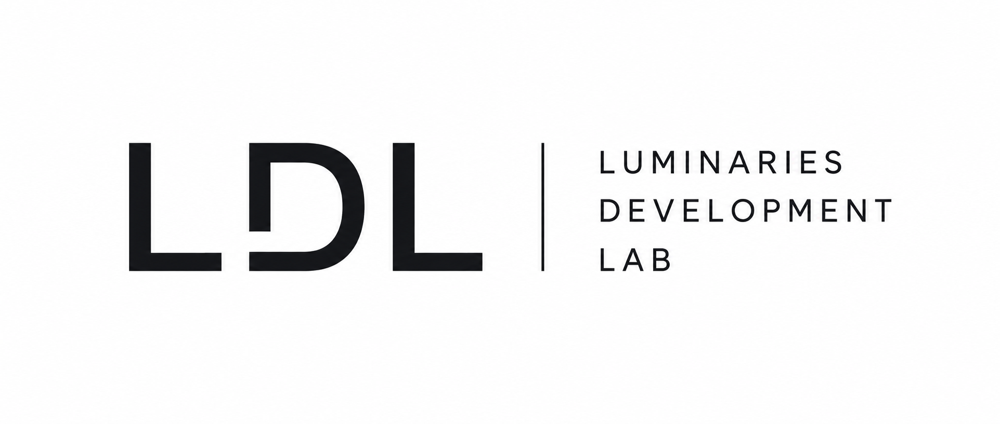
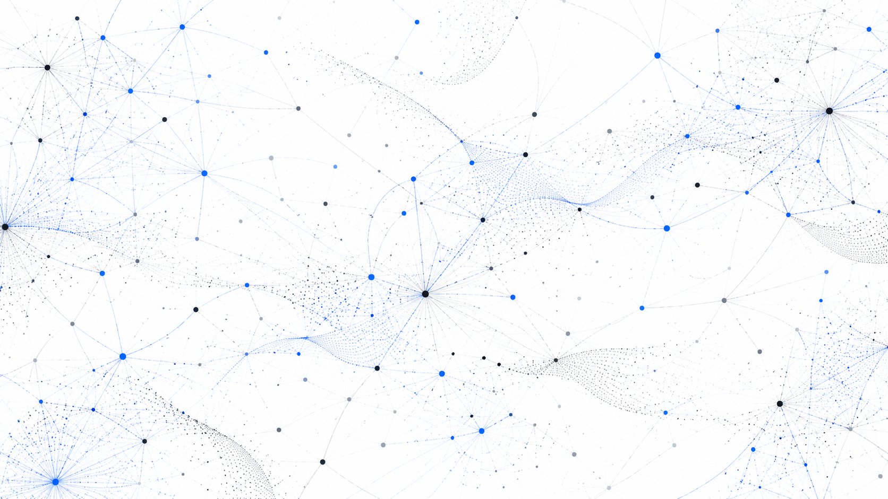
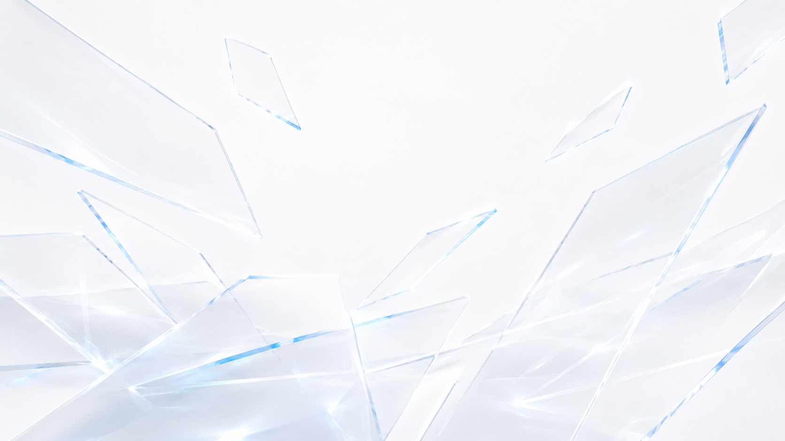

認知が変わる仕組みには、理由がある。
認知科学は、心理学・神経科学・言語学・計算機科学・哲学など、複数の学問領域にまたがる学際的な分野です。人間の知覚・記憶・意思決定・学習・言語・行動といった「心の働き」を、科学的な手法で研究します。
人間の認知がどのように働き、どのように変化するのかという、認知科学の知見に基づいた営みです。LDLでは、こうした従来の認知科学コーチングに加えて、認知計算神経科学における最新の理論も積極的に取り入れながら、アプローチを開発しています。

{{ term.description }}